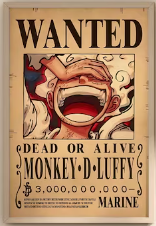
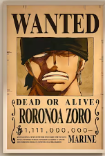
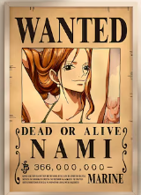
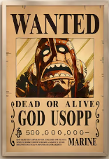
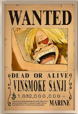
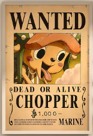
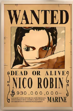
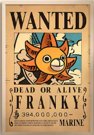
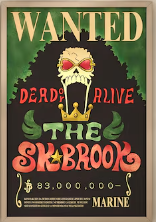
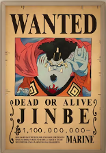

Monkey D. Luffy is the cheerful and determined captain of the Straw Hat Pirates. After eating the Gum-Gum Fruit, his body gained the properties of rubber, allowing him to stretch in incredible ways. He dreams of finding the legendary treasure known as One Piece and becoming the Pirate King. His courage, optimism, and loyalty inspire everyone around him.

Roronoa Zoro is the swordsman of the Straw Hat Pirates and one of Luffy's earliest companions. He uses a powerful three-sword fighting style that makes him a fearsome opponent in battle. Zoro trains relentlessly to become stronger with every challenge he faces. His ultimate goal is to become the world's greatest swordsman.

Nami serves as the navigator of the Straw Hat Pirates and is responsible for guiding the crew across dangerous seas. She is highly intelligent and possesses exceptional skills in cartography and navigation. Nami dreams of drawing a complete map of the entire world. Her quick thinking often helps the crew escape difficult situations.

Usopp is the sniper of the Straw Hat Pirates and is known for his creativity and resourcefulness. Although he can be fearful at times, he consistently finds the courage to protect his friends. His marksmanship skills make him an important member of the crew during battles. Usopp dreams of becoming a brave warrior of the sea.

Sanji is the cook of the Straw Hat Pirates and ensures that the crew is always well fed during their adventures. He is a skilled fighter who specializes in powerful kicking techniques. Sanji dreams of discovering the legendary All Blue, a sea where fish from every ocean gather. He deeply values kindness and never allows anyone to go hungry.

Tony Tony Chopper is the doctor of the Straw Hat Pirates and takes care of the crew's health. After eating the Human-Human Fruit, he gained the ability to think and act like a human. Chopper combines medical knowledge with determination to help those in need. He dreams of becoming a doctor capable of curing any disease.

Nico Robin is the archaeologist of the Straw Hat Pirates and one of the most knowledgeable members of the crew. Her Devil Fruit allows her to create extra limbs on surfaces around her. Robin studies ancient ruins and mysterious Poneglyphs to uncover hidden truths about history. She dreams of discovering the True History of the world.

Franky is the shipwright of the Straw Hat Pirates and a brilliant inventor. He transformed himself into a cyborg and equipped his body with many unique weapons and gadgets. Franky built the Thousand Sunny, the ship that carries the crew across the seas. His dream is to see his masterpiece sail all the way around the world.

Brook is the musician of the Straw Hat Pirates and keeps the crew entertained with his songs and humor. After being revived by the powers of a Devil Fruit, he continues his adventures as a living skeleton. Brook is a talented swordsman and possesses unique abilities related to his soul. He hopes to reunite with his longtime friend, the whale Laboon.

Jinbe is the helmsman of the Straw Hat Pirates and a master of Fish-Man Karate. He is respected throughout the seas for his wisdom, leadership, and strength. Jinbe joined the crew after forming a deep bond of trust with Luffy and his companions. He dreams of a future where humans and fish-men can live together in peace and equality.